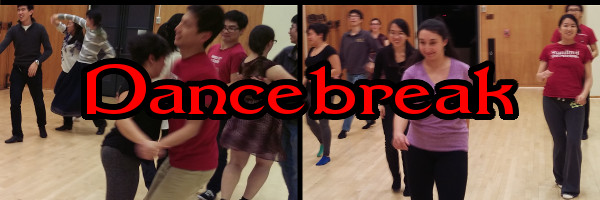

Officers
Here are the Dancebreak officers for the current (2020-2021) academic year:
President: Kent Vainio (BS 2020, MS 2021)
Vice-President: Xinlan Emily Hu (BS 2020, MS 2021)
Financial Officer: Gaurab Banerjee (BS 2021)
Webmaster: Angela Zhang (MD/PhD 2024)
(See the bottom of this page for past officers.)
We are an officially-recognized voluntary student organization. Per Stanford policy on VSOs, our constitution can be found here, and our membership requirement is as follows:
current Stanford student …
with an interest in social dance. 😊
History
Dancebreak began in Fall 2005, as "Faster Polka" because we loved faster-tempo music than was normally played at Jammix and Friday Night Waltz, especially polkas. (Also, we assumed it would force us to come up with a better name.) In those days, each quarter Richard Powers taught non-Stanford social dance series courses that were open to both students and the outside community on Thursday nights, 7-10pm. In addition, Roble Gym closed at 10:50pm. This left the big studio unused for the final 50 minutes (since no group wanted the space at that late hour for such short a block of time). When we realized that, we asked for (and received) permission from Richard to stay after his class and use the big studio. This provided us a nice, if short, weekly dance where we decided what music to play and dances to dance. 5 weeks into the quarter, Richard's courses would conclude, and because no other group was already reserving the big studio for Thursday nights, we could make our start time earlier, thus enjoying an even-longer weekly dance of our own!
In Spring 2009, concerned we were giving people the wrong impression about our focus (and possibly unintentionally intimidating them), we finally renamed ourselves — to "Dancebreak."
Richard's non-Stanford classes moved off-campus in Winter 2010, and other groups wanted Thursday nights too, so we chose to try different nights. We have mostly alternated between Monday and Wednesday nights, with Mondays being preferred due to potential conflict with other dance events on other weeknights.
We became an official Voluntary Student Organization in Fall 2013, thanks to the efforts of Tatiana Kuzovleva (BS 2015), who became our first president. Roble Gym was scheduled to be closed for a long-overdue renovation starting Summer 2013 (the renovation actually began 1 year late). Although this didn't immediately affect us (Dancebreak holds regular sessions only during the academic year), it forced us to look for alternative space on campus, many of which were unavailable except to student groups (or charged fees). That motivated us to become an actual student group.
In the final weeks of Winter 2020, we went on indefinite hiatus due to the ongoing COVID-19 pandemic. After Santa Clara County (which includes Stanford) issued its "shelter in place" orders, the University immediate decided to follow them, effectively emptying the campus (all undergraduate students were required to leave campus housing).
Dancebreak's focus has changed over the years. Originally, most attendees were dancers in Richard's 9pm class, which was usually intermediate-level. Thus we tended to play music for intermediate level dancing (such as faster polkas, a particular favorite of the early crowd). After Richard started holding his non-Stanford classes off-campus, and especially after the early attendees graduated, we shifted our focus to being a practica for Richard's Stanford dance classes, in order to help and encourage new dancers to discover a love and passion for social dancing like the original dancers had.
Tips For Running Dancebreak
For tips on running a Dancebreak session, look look here.
Stanford Dancing Resources
For information on dancing at Stanford, look here.
Here are the Dancebreak officers for prior academic years:
- 2019-2020:
President: Kent Vainio (BS 2020, MS 2021)
Vice-President: Xinlan Emily Hu (BS 2020, MS 2021)
Financial Officer: Gaurab Banerjee (BS 2021)
Webmaster: Angela Zhang (MD/PhD 2024)
- 2018-2019:
President: Melodyanne Cheng (BSH 2018, BAH 2018, MS 2019)
Vice-President: Anna Zeng (BS 2020)
Financial Officer: Pratyaksh Sharma (MS 2018)
Webmaster: Jasmine Shu (PhD 2022)
- 2017-2018:
President: Janine Birnbaum (BS 2018, BSH 2018)
Vice-President: Suvrat Bhooshan (MS 2018)
Financial Officer: Pratyaksh Sharma (MS 2018)
- 2016-2017:
President: Janine Birnbaum (BS 2018, BSH 2018)
Vice-President: Elizabeth Hillstrom (BS 2017)
Financial Officer: Sara Sheffels (BS 2016, MS 2017)
- 2015-2016:
President: Janine Birnbaum (BS 2018, BSH 2018)
Vice-President: Alexander Harris (BS 2020)
Financial Officer: Sara Sheffels (BS 2016, MS 2017)
- 2014-2015:
President: Tatiana Kuzovleva (BS 2015)
Vice-President: Michael Hang (BS 2016)
Financial Officer: Edward Dai (BS 2015, MS 2015)
- 2013-2014:
President: Tatiana Kuzovleva (BS 2015)
Vice-President: Michael Hang (BS 2016)
Financial Officer: Edward Dai (BS 2015, MS 2015)